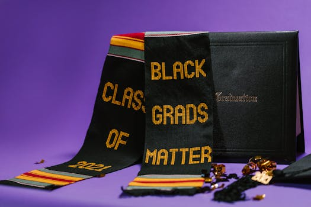

2028 全球智能危機：白領真的要被 AI 取代了嗎？從 400 家企業培訓看真相
本文是 YouTube 影片「2028全球智能危機：白領大裁員時代來了？」的延伸閱讀版。 影片講了核心觀念，本文加上獨家分析和企業實戰觀察。 影片版本：https://www.youtube.com/watch?v=Lxb5AZd5ySo
影片重點回顧
上個月一篇叫《2028年全球智能危機》的文章在全球科技圈炸開了鍋。文中提到的科技公司股價全部跳水，道瓊指數當天跌了超過 800 點。文章的核心觀點是：AI 正在打破「人類智力是稀缺資源」這個人類繁榮了兩百年的前提，白領將面臨前所未有的失業危機。
但我認為事情沒有那麼絕對。好的壞的都會發生，關鍵是你怎麼準備。
【獨家】幽靈繁榮：一個你必須懂的概念
Photo by www.kaboompics.com on Pexels
這篇文章裡有一個概念特別值得深究，叫做「幽靈繁榮」（Ghost Prosperity）。
表面上看，GDP 在漲、企業營收在漲、股價在漲。但實際上消費端在萎縮。原因很簡單：AI 不消費。
一個程式設計師每個月喝咖啡、買手機、背房貸，這些消費流入了整個經濟體系。但換成 AI 寫程式，AI 只消耗電費。顯卡的開銷確實大，但利潤集中在少數算力公司手上。
更關鍵的數據：美國白領佔了全國 50% 以上的就業，貢獻了 75% 的非必需消費。白領就業率每下降 2%，全美非必需消費就跌 3% 到 4%。這個放大效應意味著，白領失業對經濟的衝擊遠比數字看起來的要嚴重。
為什麼白領失業比藍領更危險？
文章用了「血條厚」這個形容。藍領失業是立竿見影的——今天被裁，明天餐廳就少了客人，整個社會馬上感受到。但白領有存款、有投資，被裁之後可能撐半年到一年才開始縮減消費。等到問題浮現時，已經像慢性病一樣擴散到全身了。
這也是為什麼 Anthropic 的 CEO Dario Amodei 在今年一月的文章《技術的青春期》中會說：50% 的初級白領工作會在五年內受到衝擊。
【獨家】我在 400 多家企業看到的真實情況
 Photo by Kindel Media on Pexels
Photo by Kindel Media on Pexels
帶了這麼多企業做 AI 培訓，我可以很負責任地說：被取代的不是整個崗位，而是崗位裡的重複性任務。
三種企業反應
| 類型 | 占比 | 特徵 | 結果 |
|---|---|---|---|
| 恐慌型 | 約 20% | 聽到 AI 就想裁員 | 短期省錢，長期人才斷層 |
| 觀望型 | 約 50% | 知道 AI 重要但不知道怎麼開始 | 原地踏步，被對手甩開 |
| 行動型 | 約 30% | 先讓員工學會用 AI，再調整流程 | 效率提升 30-50%，沒裁一個人 |
行動型企業的共同特徵是：他們不是問「AI 可以取代誰」，而是問「AI 可以幫誰做得更好」。
一個台灣製造業的真實案例
有一家做精密零件的公司，業務部門原本花大量時間在回覆客戶的技術規格詢問。導入 AI 之後，80% 的標準回覆可以由 AI 生成初稿，業務只需要審核修改。
結果不是業務被裁員，而是業務有更多時間去做高價值的客戶關係經營。這家公司的客戶滿意度反而提升了，因為回覆速度從兩天縮短到兩小時。
【獨家】Excel 啟示錄：為什麼我對未來偏樂觀

Photo by RDNE Stock project on Pexels影片裡我提到了 Excel 的例子，這裡我想更深入地展開。
1980 年代 Excel 出現時，所有人都說會計師要失業了。畢竟，一個軟體就能做以前十個人的計算工作。
但結果是：因為做報表的成本大幅降低，老闆開始要求每天看分析、每週做財務建模、更精細的預算控制。會計師的從業人數反而翻了好幾倍。
這個邏輯可以推演到 AI 時代：
- 影片製作成本趨近於零 → 企業對影片內容的需求爆發
- 程式開發成本大幅降低 → 以前做不起的小型 App 專案全部冒出來
- 設計成本降低 → 連街邊小吃店都開始做品牌設計
Jevons 悖論
經濟學有個概念叫「Jevons 悖論」：當技術提升使某種資源的使用效率提高時，這種資源的消耗量反而會增加，而不是減少。
19 世紀蒸汽機效率提升時，大家以為煤炭消耗會減少，結果因為用途更多、成本更低，煤炭消耗量反而暴增。AI 對人力的影響很可能也是如此。
阿峰觀點
我的立場是中立偏樂觀，但有一個前提：你要主動學會跟 AI 協作。
被動等待的人，確實會成為那批「放長假」的白領。但主動學習的人，這波變革其實是千載難逢的機會。
以前你想創業，要組團隊、找投資、租辦公室。現在一個人加幾個 AI 同事，可能就能把一件事做起來。AI 降低的不只是大公司的成本，更是個人創業的門檻。
但我真正警惕的不是工作和經濟。
我們這一代的審美和價值觀，是被人類創作者的作品塑造的。 小時候看的卡通、讀的小說、聽的音樂，那些都是人類情感的結晶。但我們的下一代呢？他們從小接觸的廣告、故事、遊戲，有多少是 AI 生成的？
到底是我們在塑造 AI，還是 AI 在塑造我們？
這才是我覺得，真正需要認真思考的問題。
本文提到的資源
| 資源 | 說明 |
|---|---|
| 2028年全球智能危機 | 搜尋「2028 Global Intelligence Crisis」 |
| 技術的青春期（Dario Amodei） | Anthropic CEO 對 AI 衝擊的預判 |
| Jevons 悖論 | 效率提升反而增加消耗的經濟學概念 |
影片中提到的資源
| 公司/概念 | 說明 |
|---|---|
| 亞馬遜裁員 | 2025 年釋出 14,000 人 |
| Salesforce 裁員 | 4,000 人，CEO 說一半工作交給 AI |
| Block 裁員 | 4,000 人，盤後股價漲 24% |
| 幽靈繁榮 | GDP 漲但消費縮的經濟現象 |
延伸閱讀
2026 AI 實戰應用課 → autolab.cloud/2026-ai-course
關於作者
黃敬峰（阿峰老師），企業 AI 實戰培訓專家，400+ 企業合作、10,000+ 學員。 核心心法：「會用、懂用、好用、每天用」 官網：https://www.autolab.cloud